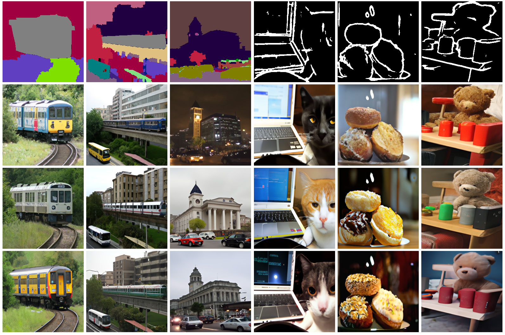

Pretraining is All You Need for Image-to-Image Translation
-
Tengfei Wang
HKUST -
Ting Zhang
Microsoft Research Asia -
Bo Zhang
Microsoft Research Asia -
Hao Ouyang
HKUST
-
Dong Chen
Microsoft Research Asia -
Qifeng Chen
HKUST -
Fang Wen
Microsoft Research Asia
Diverse samples synthesized by our approach.
Abstract
We propose to use pretraining to boost general image-to-image translation. Prior image-to-image translation methods usually need dedicated architectural design and train individual translation models from scratch, struggling for high-quality generation of complex scenes, especially when paired training data are not abundant. In this paper, we regard each image-to-image translation problem as a downstream task and introduce a simple and generic framework that adapts a pretrained diffusion model to accommodate various kinds of image-to-image translation. We also propose adversarial training to enhance the texture synthesis in the diffusion model training, in conjunction with normalized guidance sampling to improve the generation quality. We present extensive empirical comparison across various tasks on challenging benchmarks such as ADE20K, COCO-Stuff, and DIODE, showing the proposed pretraining-based image-to-image translation (PITI) is capable of synthesizing images of unprecedented realism and faithfulness.
Comaprison with other methods.
Approach
The overall framework. We can perform pretraining on huge data via different pretext tasks and learn a highly semantic latent space that models general and high-quality image statistics. For downstream tasks, we perform conditional finetuning to map the task-specific conditions to this pretrained semantic space. By leveraging the pretrained knowledge, our model renders plausible images based on different conditions.
Image Editing
Numerical Results
Additional Results
BibTeX
@inproceedings{wang2022image,
}